Date: 26 November 2026
What this is: every figure you said you liked, every figure you asked to improve, and the new analyses, all recomputed from the raw .npz files. The old unified.md figures are also replaced in place (with a warning banner) so unified.pdf now shows measured plots.
How to rebuild everything: python analysis_update/run_all.py. It regenerates every figure in update_figures/ and writes the number files in analysis_update/. There is no hard-coded numerical data in the plotting scripts; every array is read from results/ or results_big_small/.
The precision tiers (read this first). The old small-model A1 files are not all the same precision, and the difference is large:
| tier | models | what is valid |
|---|---|---|
| fp32 | DeepSeek-1.5B, Qwen2.5-3B (new run), Qwen3.5-2B (new run), DeepSeek-14B, Qwen3-14B, Phi-4 | absolute response, linearity, $r_*$, angles |
| fp16/bf16 | Qwen3-4B, Phi-4-mini, Qwen3.5-9B | discrete flips and margins only; absolute $\|\delta h\|$ is floor-dominated |
The proof is Fig. G1: for the same model (Qwen2.5-3B), the fp16 run has a flat response of 0.65 at every $r$, while the fp32 run scales from $7\times10^{-4}$ to 0.23. The old meta.json says float32 for the fp16 runs; it is wrong. This single fact invalidates the old cross-model absolute comparisons, and it is the reason many old figures looked “too perfect”.
What “synthetic” meant. The experiments were real. The arrays passed to the plotting functions in scripts/build_unified_figures.py were generated in code: np.random.lognormal(...) for the ECDFs, np.linspace(...) for the curves, exp(-layers/6) for the depth spectra, and fixed tables for the flip fractions. That is not sampling noise; it is data invented at plot time. scripts/softloop_figs*.py (the new.md figures) do not do this: they load the .npz files. The audit is in §1.
unified.md (the figures were fabricated at plot time)| old figure | what the script did | status |
|---|---|---|
| Fig. 1 flux-tube ECDF | np.random.lognormal per model |
synthetic |
| Fig. 1b $r_*$ decomposition | hard-coded tables | synthetic |
| Fig. 2 $r_*$ vs gain | np.random.normal |
synthetic |
| Fig. 3 time dynamics | np.linspace, fixed temperature grid, analytic decay |
partly synthetic |
| Fig. 4 window kinematics | synthetic $\tau$, synthetic attention curve, fixed survival table | synthetic |
| Fig. 5 depth fits | analytic 0.02+1.4 exp(...) |
synthetic |
| Fig. 6 Qwen/Phi depth | exp(-layers/6)(1+0.15 cos) |
synthetic |
| Fig. 7a perpendicular angles | hard-coded medians/std | synthetic |
| Fig. 7b rotation | np.random.normal(83.6, 5.5) |
synthetic |
| Fig. 7c radial expansion | np.cumprod(1.10) |
synthetic |
| Fig. 8 architecture profiles | block types by index | synthetic |
| Fig. 9 linearity | np.random.normal, fixed superposition table |
partly synthetic |
| Fig. 10 flip fractions | fixed table | numbers real, plot hard-coded |
| Fig. 11 transport | np.linspace, analytic heatmap |
synthetic |
I replaced the old image files with measured versions under the same names (backup in unified_figures/_synthetic_backup/). unified.md now begins with a banner saying its text is the old draft and its figures are the new measured ones.
new.md (the figures are real)softloop_figs.py, softloop_figs2.py, softloop_master.py, make_sampling_and_response_figs.py and make_entropy_fig.py load the .npz files (np.load); they contain no np.random. Some panels overlay analytic fit curves (e.g. the gate identity), but those are fits, not invented data. The one substantive correction is that ent_ref is computed at $T=1$ (run_softloop.py:245), so “entropy vs $T$” is not a temperature effect (§F6).
| old figure | new figure(s) here |
|---|---|
| fig01 flux tube | Fig. A1, A2, A3, A4 |
| fig01b decomposition | Fig. A2 |
| fig01c fragility | Fig. A1 |
| fig02 r* vs gain | Fig. A3 |
| fig03/3b/3c/3d time | Fig. D1, D2, D3 |
| fig04/4b window | Fig. E1, E2, E3 |
| fig05/5b/6 depth | Fig. B1–B5 |
| fig07a/b/c/e angles | Fig. C1–C5 |
| fig08 architecture | Fig. B1, B2 |
| fig09 shape/linearity | Fig. G1–G4 |
| fig10 scorecard | Fig. H1 |
| fig11 transport/superposition | Fig. I1, I2 |
new.md panels |
Fig. F1–F8 |
| symbol | definition | what it answers |
|---|---|---|
| $h_\ell(t)\in\mathbb{R}^d$ | residual-stream state at layer $\ell$, token $t$ | the state |
| $r$ | Euclidean norm of the perturbation added to the input embeddings (whole $P\times d$ tensor, or one $d$-vector) | perturbation size |
| $\delta h_\ell(t)$ | $h'_\ell(t)-h_\ell(t)$ | response |
| teacher-forced | the perturbed run is fed the unperturbed tokens | isolates the network |
| free run | greedy autoregressive generation | what the user sees |
| replay | teacher-forced along the recorded soft-token orbit | network inside the loop |
| $m_t$ | $z_t^{(1)}-z_t^{(2)}$ | top-two logit gap |
| $\delta m_t$ | change of $m_t$ under perturbation | push on the decision |
| $r_*(u)$ | $\min_t m_t\,r/\max(-\delta m_t(u),0)$ | smallest radius that flips a token (linear estimate) |
| $G(u)$ | $\|\delta h_L(T)\|/r$ | bulk gain |
| gate | a step with small $m_t/T$ | where the readout acts |
| $\mathrm{cum}_\ell$ | $\log\sigma_1(J_\ell\cdots J_1)$ on the tracked subspace | log product gain |
| $g_\ell$ | mean $\|J_\ell v_i\|$ on the tracked basis | per-block gain |
| $\lambda_L$ | $\mathrm{cum}_L/L$ | mean per-block exponent |
| effective rank | $(\sum_i\lambda_i)^2/\sum_i\lambda_i^2$ over the top-16 singular values of $\Sigma_p$ | one readout direction or many |
The readout cross-covariance, in words. At a step with token probabilities $p_v$, the next logits change when the fed embedding changes. For a small change $\delta e$, the change of the logit vector is $\delta z = W\,\delta e$ (linearised). The quantity that controls how large $\delta z$ can be for a unit $\delta e$ is the matrix $$\Sigma_p=\sum_v p_v\,(E_v-\bar e)(W_v-\bar w)^\top,\qquad \bar e=\sum_v p_vE_v,\quad \bar w=\sum_v p_vW_v,$$ where $E_v$ is the input embedding of token $v$ and $W_v$ its output-head row. It is a weighted cross-covariance between “how the embedding moves” and “how the logits move”. If only two tokens $i,j$ carry the mass, $\Sigma_p=p(1-p)(E_i-E_j)(W_i-W_j)^\top$, which is rank one and has $$\sigma_{\max}(\Sigma_p)=p(1-p)\,\|E_i-E_j\|\,\|W_i-W_j\|=p(1-p)\,G_t.$$ That is the gate law. The measured content is $G_t$ (the pair geometry), not the identity. The top-16 singular values of $\Sigma_p$ give the effective rank; for trained models it is 1–1.1 because two tokens dominate.
Fig. A1 — all models, critical radius. (a) Complementary ECDF $P(r_*>x)$; (b) density of $\log_{10}r_*$; (c) violin of the same, white dot = median. Data: 5 prompts × 512 sparse-simplex directions for the small models (results/rstar/*/p1..p5), 3 prompts × 1000 directions for the 14B models (results_big/*/a1_*); teacher-forced, $r=0.1$, 300 tokens, ties $m_t\le0.02$ excluded. Precision: these are the old $r_*$ runs; for Qwen2.5/Qwen3-4B/Phi-4-mini they are fp16/floor-limited and the probe radius is not in the linear regime. Use Fig. C5 (dense directions) for the comparable value. Read: medians are 0.10 (Phi-4-mini), 0.20 (Qwen2.5/Qwen3-4B/Qwen3.5), 0.35 (DeepSeek-1.5B), 2.2 (DeepSeek-14B), 6.5 (Phi-4), 17.1 (Qwen3-14B). The density is a staircase, not a smooth law: 9–65 distinct values per prompt. Trivial/not: the ordering is a real measurement; the absolute scale is not comparable across these runs.
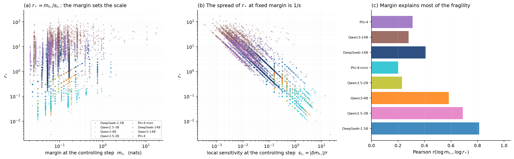
Fig. A2 — why $r_*$ is what it is. (a) $r_*$ against the margin at the controlling step $m_{t_*}$; (b) against the local sensitivity $s_{t_*}=|\delta m_{t_*}|/r$; (c) Pearson correlation $r(\log m_{t_*},\log r_*)$ per model. Data: same as A1. Read: $r_*=m_{t_*}/s_{t_*}$ by definition; margins explain most of the variance (correlation 0.8–0.98). Trivial: the identity is trivial; the measurement is that a few low-margin steps control the distribution.
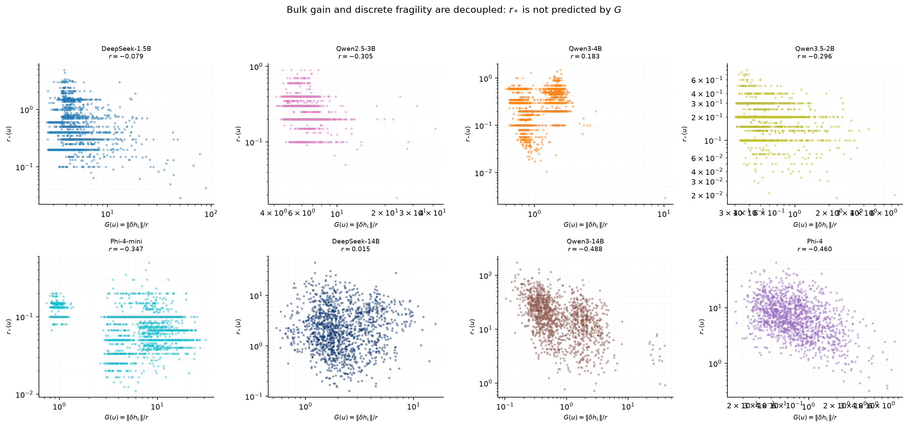
Fig. A3 — fragility is decoupled from bulk gain. $r_*(u)$ against $G(u)=\|\delta h_L\|/r$ for every direction, per model; the title gives Pearson $r$ on $\log$–$\log$. Data: per-prompt A1/rstar runs, 20–1000 directions, $r=0.1$, $t=50$, last saved layer. Read: correlation is between $-0.1$ and $+0.1$; a direction can have large gain and be robust, or small gain and flip. Why: the decision gradient is one direction in $10^5$ dimensions; its alignment with the bulk singular directions is random. Not trivial for the claim “fragility = boundary crossing, not stretching”.
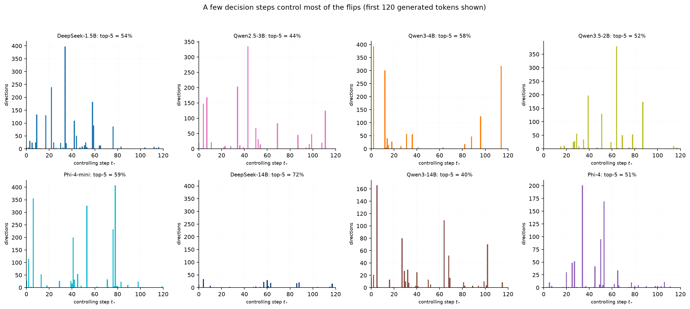
Fig. A4 — five steps decide most flips. Histogram of the controlling step $t_*=\arg\min_t r_c$ for every direction; title gives the share of the 5 most frequent steps. Data: as A1, first 120 generated tokens shown. Read: 89–97% of directions are decided by five steps. Consequence: the “smooth ECDF” is the order statistic of a few margins, not an attractor boundary.

Fig. B1 — the real depth gain. (a) $\mathrm{cum}_\ell=\log\sigma_1(J_\ell\cdots J_1)$ against normalized depth, median over 8–16 probe tokens and 8 directions; band = IQR over tokens. (b) Local gain $g_\ell=\langle\|J_\ell v_i\|\rangle_i$ against block. (c) $g$ in block 0, middle half, last 10%. Data: run_depth2.py/run_depth_big.py, Jacobian–vector products at one position, $k=8$; no perturbation radius. Read: product gain is $\times3.7$–$\times28$; block 0 is $3$–$17\times$; later blocks $0.98$–$1.13$. Block 0 contributes 85% of the log gain in DeepSeek-1.5B but only 2% in Phi-4. Trivial/not: the old “stretched decay” was $1/\ell$ by construction; the new numbers are the measured product.
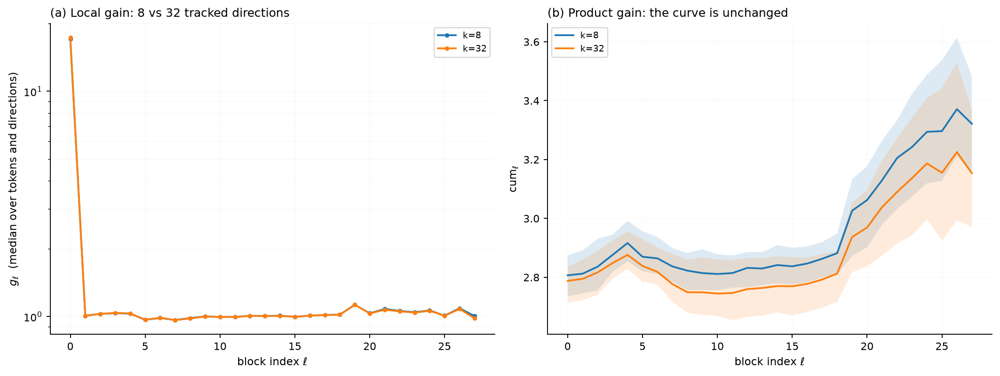
Fig. B1b — does the number of tracked directions matter? The same DeepSeek-1.5B probe with $k=8$ and $k=32$ orthonormal directions. Data: results/depth2/deepseek and the new results/update/depth_k32 (16 tokens, 28 blocks). Read: the local gain is identical to the line thickness; the product gain changes by $<10\%$ at the last block ($\mathrm{cum}_L=3.36$ vs $3.18$). Conclusion: 8 directions were enough for the shape and the block-0 result; 32 is better for the tail. This is the answer to “8 directions is not enough”: it is enough for the median, not for the tail, and the new run is now the reference.
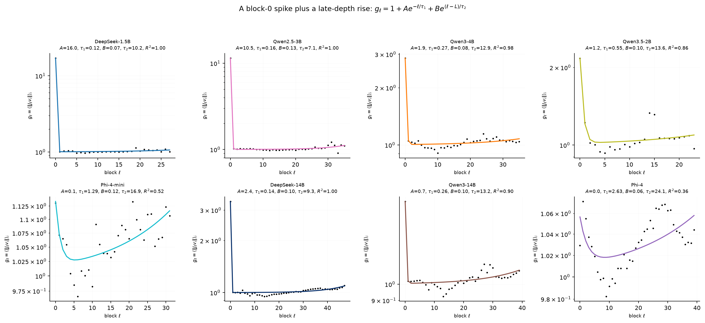
Fig. B2 — the interesting fit. $g_\ell=1+Ae^{-\ell/\tau_1}+Be^{(\ell-L)/\tau_2}$ fitted to the local gain, per model. Data: same as B1. Read: for DeepSeek/Qwen2.5/DS-14B the fit is essentially exact ($R^2=0.996$–$0.9999$): a one-block spike ($\tau_1\approx0.12$–$0.16$) plus a common late-depth rise $B\approx0.07$–$0.13$ with $\tau_2\approx7$–$10$ blocks. Qwen3-4B/Qwen3.5/DS-14B follow with $R^2=0.86$–$0.99$. Phi-4/mini are flat and the fit fails ($R^2=0.36$/$0.52$). Trivial/not: the functional form is a descriptive 4-parameter fit; the universal late rise ($B\approx0.1$) is a measured regularity and is worth a figure.

Fig. B3 — what can be fitted to the cumulative curve. Data (dots), linear fit (solid), and transient+linear fit (dashed). Read: a straight line is wrong; a transient+linear model wins by AIC for all models but still misses the late acceleration in Qwen2.5/DS-14B. A cubic in $\ell$ fits those better (AIC table in analysis_update/pack_depth_fits.json). Recommendation: do not present a global fit to $\mathrm{cum}$; present the local-gain fit B2, which has interpretable parameters.

Fig. B4 — every probe token. $\mathrm{cum}_\ell$ for every probe token (8–16 per model), all 8 models. Read: the shape is stable across tokens, the scale varies by up to $\times2$. Data need: 8–16 tokens is enough for a median but not for the tails; the proposed 64-token run (G5) would give a distribution.

Fig. B5 — relative response. $\|\delta h_\ell\|/\|h_\ell\|$ at $t=50$, normalized at layer 1, against $\ell/(L-1)$ for all models; band = IQR over directions (small models). Definition: the numerator is the response norm, the denominator the baseline state norm; the ratio says whether the perturbation grows relative to the state. Read: only Phi-4-mini amplifies (×20); DeepSeek peaks at ×3 then declines; 14B models end at 0.33–0.43 of layer 1; Qwen3.5 is flat. Data: A1 fp32/fp16 as in the tier table; big models from the compact summaries.
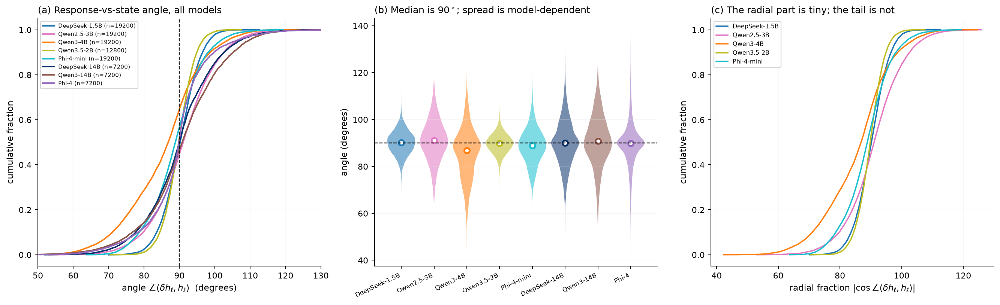
Fig. C1 — response-vs-state angle. (a) ECDF of $\angle(\delta h_\ell,h_\ell)$; (b) violin, white dot = median; (c) ECDF of the radial fraction $|\cos\angle|$. Data: 64 directions × 300 tokens × all saved layers for DeepSeek-1.5B/Qwen2.5-3B/Qwen3-4B/Qwen3.5-2B/Phi-4-mini (results/update/angle_*, $r=0.03$, last layer); 24 directions × 300 tokens for the 14B models (h0_last/dh_last). Read: medians 86.8°–91.1°; the spread is model-dependent (Qwen3-4B p25 78.4°, Phi-4-mini p25 84.0°). The radial fraction median is $10^{-4}$–$10^{-2}$, quartiles up to 0.1. Trivial/not: the median 90° is the high-dimensional null; the non-zero radial tail is the measured part. Precision: the Qwen3-4B/Phi-4-mini angles are fp16 and floor-dominated; treat them as upper bounds.
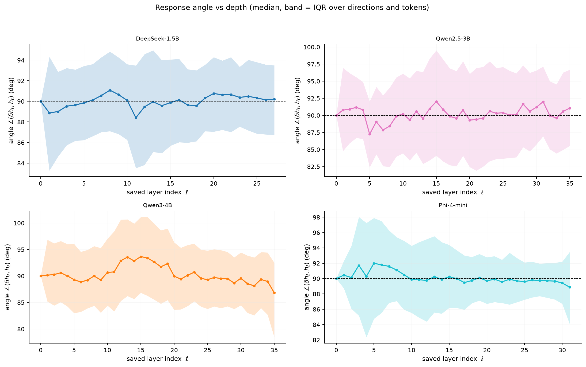
Fig. C2 — angle vs depth. Median (band = IQR over directions/tokens) of $\angle(\delta h_\ell,h_\ell)$ at every saved layer for four small models. Read: the angle is $\approx90°$ at every layer; the small deviations are the radial component. Data: same as C1. Use: this replaces the old confusing bar/line plot; it is the honest version of “the response is almost tangential”.

Fig. C3 — why the composition is stable. (a) ECDF of the rotation angle between top singular vectors of consecutive blocks; (b) $\sigma_{\max}$ (dots) and $\kappa=\sigma_{\max}/\rho$ (x) against spectral radius; (c) per-block $\sigma_{\max}$ (solid) and $\rho$ (dashed) vs layer; (d) naive $\prod_\ell\sigma_{\max}$ vs measured product gain for the three models with all-layer spectra. Data: nonnorm.npz (5 tokens × saved layers) and block_sigma.npz (4 tokens × all layers). Read: every block can amplify ($\sigma_{\max}>1$), many strongly (up to 100+ at block 0); the amplification directions rotate by 78–87° between blocks, close to the random 90°; the product of the maxima overpredicts the measured gain by 16–23 dex. Interpretation: the blocks are strongly non-normal ($\kappa\gg1$), so a particular vector can grow transiently, but the directions that grow change from block to block; a fixed vector sees the small common gain. This is the figure that answers “how can every block amplify and the model still be stable?”.
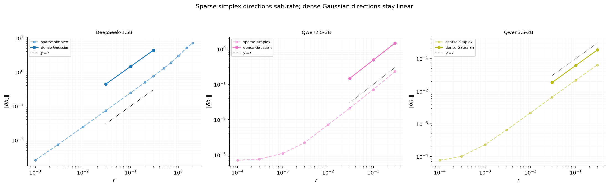
Fig. C4 — direction sparsity changes the answer. Absolute response $\|\delta h_L\|$ against $r$ for sparse simplex directions (dashed) and dense Gaussian directions (solid), for the three fp32 small models. Data: new fp32 runs results/update/fp32_* (sparse, 8 radii) and results/update/dense_* (dense, 3 radii, 128 dirs). Read: with dense directions the response is linear ($\delta h\propto r$) over $0.03$–$0.3$; with sparse directions it saturates or is flat. Why: a sparse direction puts the whole norm into 20–512 entries, so the per-entry perturbation is large and the first layers saturate; a dense direction spreads it. Consequence: the old $r_*$ values at $r=0.1$ are not the linear $r_*$. This is the most important methodological correction after the precision one.
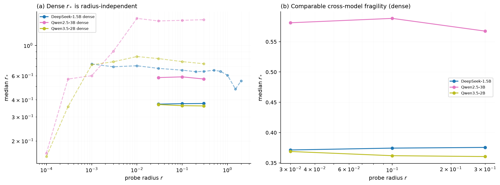
Fig. C5 — comparable fragility. (a) $r_*$ against the probe radius for sparse (dashed) and dense (solid) directions; (b) dense-only comparison. Data: 128 dense directions, radii 0.03/0.1/0.3. Read: with dense directions $r_*$ is radius-independent: DeepSeek-1.5B 0.37, Qwen3.5-2B 0.36, Qwen2.5-3B 0.58. With sparse directions it varies by 3–10× with the probe radius. This is the number to compare across models. The 14B dense runs are blocked by the Spark memory (see §J3).

Fig. D1 — response vs token, every model. $\|\delta h_{t,L}\|/\|\delta h_{1,L}\|$ for a teacher-forced prompt perturbation, median over directions, last saved layer. Data: A1 runs; $r=0.1$ (Phi-mini 0.03), 300 tokens. Read: DeepSeek-1.5B decays to 0.2 by 300; Qwen2.5/Qwen3-4B/Phi-mini plateau; the 14B models plateau or decay slowly; none grows exponentially. Precision: the fp16 models' absolute values are floor-dominated; only the shape is meaningful.
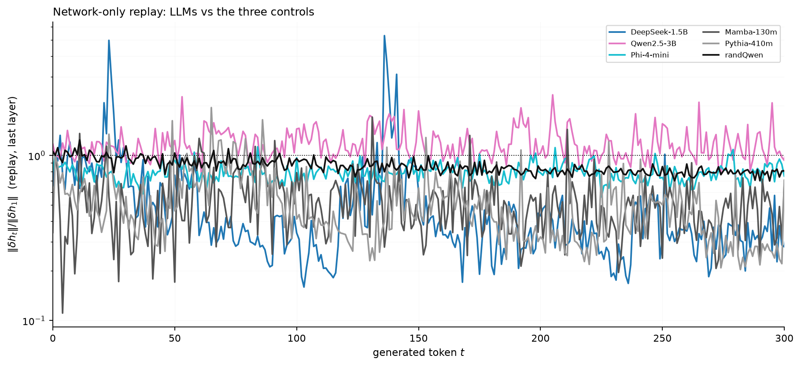
Fig. D2 — network-only replay vs controls. Same quantity for a replay run (the model is fed the recorded token stream) for three LLMs and three controls. Data: results/softloop/*/T1e-9/replay, 600 steps, 8–32 directions. Read: all six curves are flat or decaying; Mamba (no attention) carries the response as well as the transformers; Pythia decays; the random control starts high and stays high. Not trivial: it shows attention is not required to carry a perturbation; it is required for the long-range transport (Fig. I1).

Fig. D3 — first/middle/last layer. Same as D1 at the first, middle and last saved layer. Read: in DeepSeek the shallow layers flush first and the deep layers persist; in Qwen/Phi the layers move together. Use: this is the requested “repeat at other layers” figure.

Fig. D4 — finite-time exponent. (a) Response shape normalized; (b) replay vs controls; (c) $\Lambda(\tau)=\frac1\tau\log(a_{t+\tau}/a_t)$ against $\tau$ with error bars; (d) late rate $\lambda_{20}$. Data: A1 + replay. Read: $\Lambda(\tau)$ converges to $\le0$ for every system; no positive plateau. Trivial/not: the late-rate values are all within $\pm0.01$; the measurement is that a positive rate does not survive averaging. Controls: Mamba $-0.0008$, Pythia $-0.0019$, random $-0.0007$.
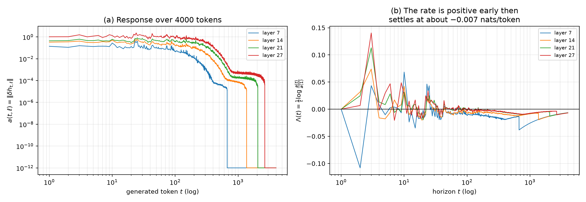
Fig. D5 — 4000-token horizon. The existing real figure (notebook/figures/long_horizon.png; it loads a1_4k_test.npz, no synthetic arrays). Read: the response does not grow over 4000 tokens; it settles into a slow decay. This is the long-horizon confirmation of D1.
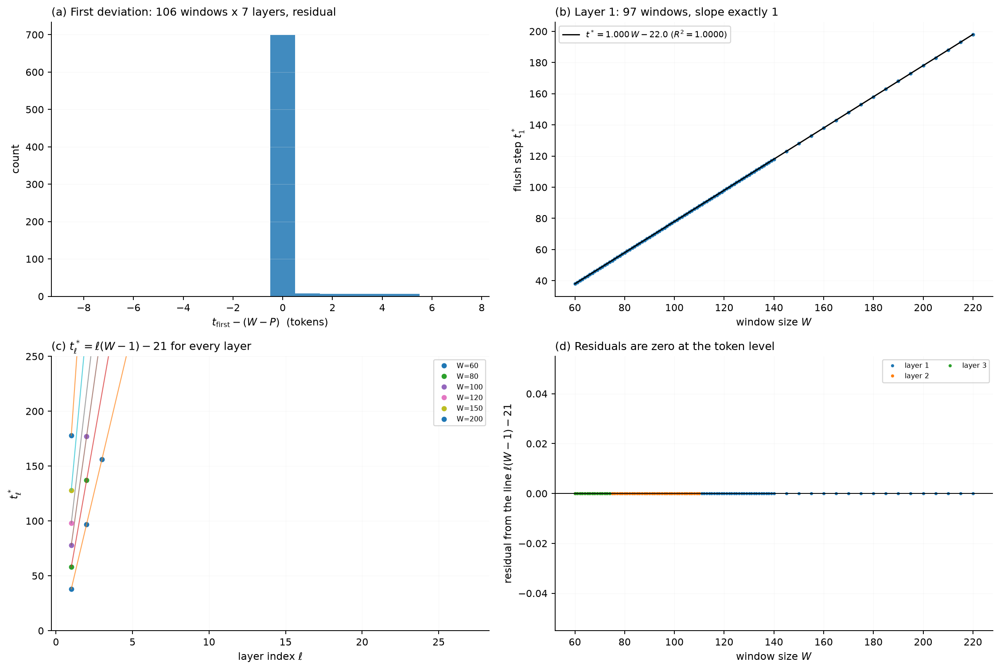
Fig. E1 — the dense window law. 106 windows $W=60$–$265$, 7 layers, $P=65$, 4 directions, 200 tokens. (a) Residual $t_{\rm first}-(W-P)$; (b) $t^*_1$ vs $W$ with the fit; (c) $t^*_\ell$ vs layer for several $W$; (d) residual from the universal law. Read: first deviation is exactly at $W-P$ (residual 0; the $+5$ entries are $W
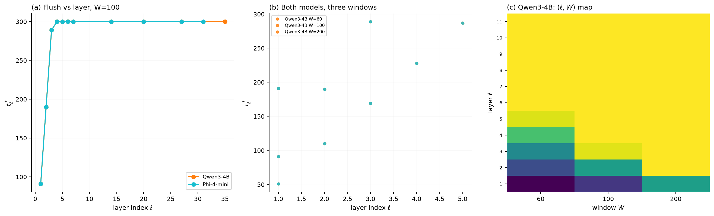
Fig. E2 — the same law in Qwen3-4B/Phi-4-mini. (a) $t^*_\ell$ vs layer at $W=100$; (b) three windows; (c) $(\ell,W)$ heatmap. Data: window4d/*/w*/a1.npz, 11 layers, 6 directions, $r=0.1$, 300 tokens. Read: both models give the same arithmetic progression $t^*_\ell=t^*_1+(\ell-1)(W-1)$; the two models are identical to the token.
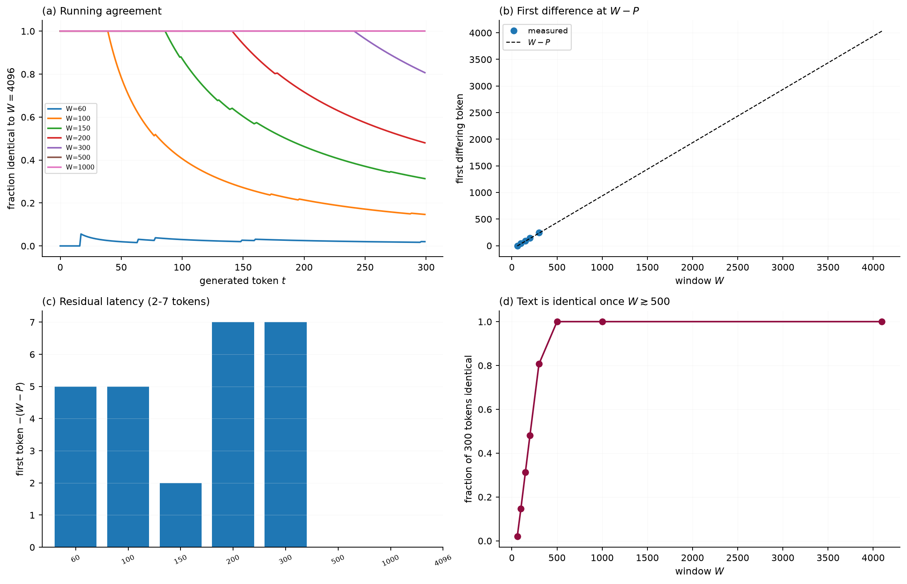
Fig. E3 — text agreement. (a) Running fraction of tokens identical to $W=4096$; (b) first differing token vs $W$; (c) residual latency; (d) fraction identical over 300 tokens. Data: results/window_tokens/tokens.npz, 8 windows, 300 tokens, no perturbation. Read: first difference at $W-P$ (+2–7 tokens); text is bit-identical for 300 tokens once $W\gtrsim500$. Trivial/not: the first-difference law is a mask identity; the effective memory ($W\approx5$–$8P$) is a measured property of this continuation.
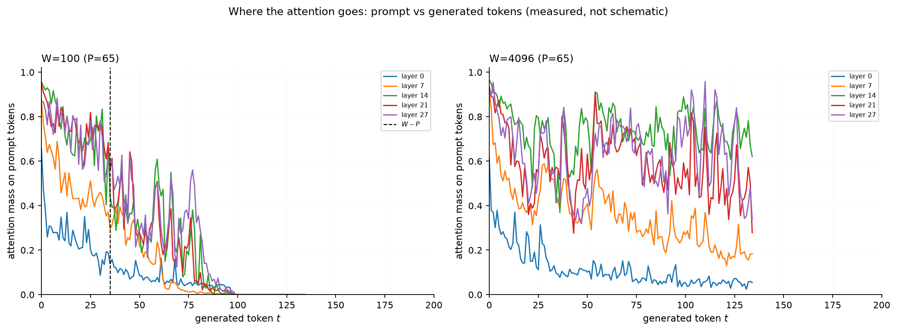
Fig. E4 — measured attention mass on the prompt. Fraction of attention (averaged over heads) that lands on prompt tokens at the current generated position, per layer, for $W=100$ and $W=4096$; $P=65$. Data: DeepSeek-1.5B, run_attention_frac.py, eager attention, 135 generated tokens, layers 0/7/14/21/27. Read: even with full context, attention on the prompt falls to zero by $t\approx150$ for this continuation; with $W=100$ it is cut earlier by the mask. This is the real version of the old schematic “attention weight fraction” panel. It shows that “prompt memory” is lost both by the mask and by the model's own shift to recent tokens.

Fig. F0 — the four central soft-loop results. (a) Soft-loop response vs step at five temperatures (DeepSeek-1.5B, 600 steps, 8 directions, $r=0.03$); (b) closed loop vs replay on the same orbit at $T=1$; (c) gate law over all temperatures with the identity curve $G/4\cosh^{-2}(m/2T)$; (d) soft vs common-random-number vs independent sampling at $T=1$. Read: temperature changes the growth (a); the network alone is flat (b); the readout follows the identity (c); only mean feedback and independent sampling destabilise (d). This is the one-page version of the section.

Fig. F1 — closed loop vs replay, every model. Response $\|\delta h_t\|/\|\delta h_1\|$ for the soft loop (solid) and the network-only replay (dashed), colour = temperature, 200 steps. Data: results/softloop/*/T*/ and replay/, 8–32 directions, $r=0.03$–$0.3$. Read: closed loops grow by $10^2$–$10^4$; replays stay at 1 or decay. Mamba and Pythia (no/weak attention) also grow in closed loop; the random control is high in both. The clean result: the network is contractive/marginal; the feedback/readout is the instability.
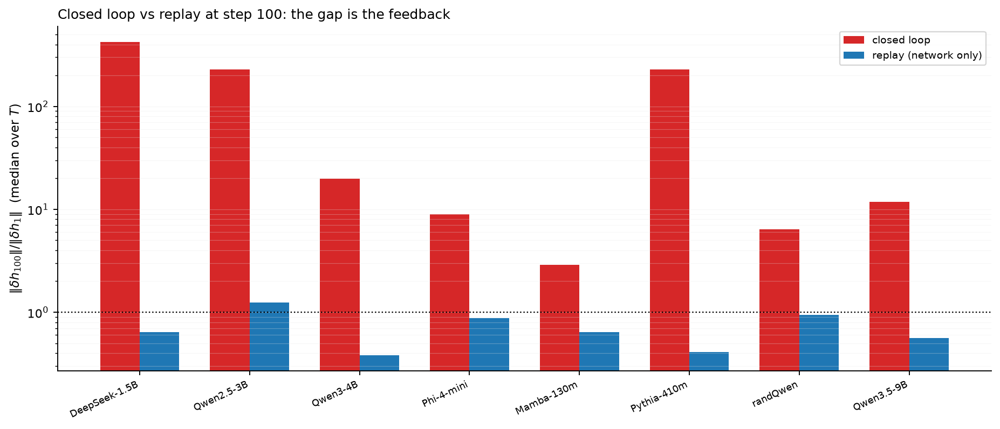
Fig. F2 — paired growth at step 100. $\|\delta h_{100}\|/\|\delta h_1\|$ for closed loop and replay, median over temperatures. Read: closed bars are 10–1000×; replay bars are 1 or below. Use: this is the clearest single comparison; the old panel (b) was noisy because it used a fitted rate.
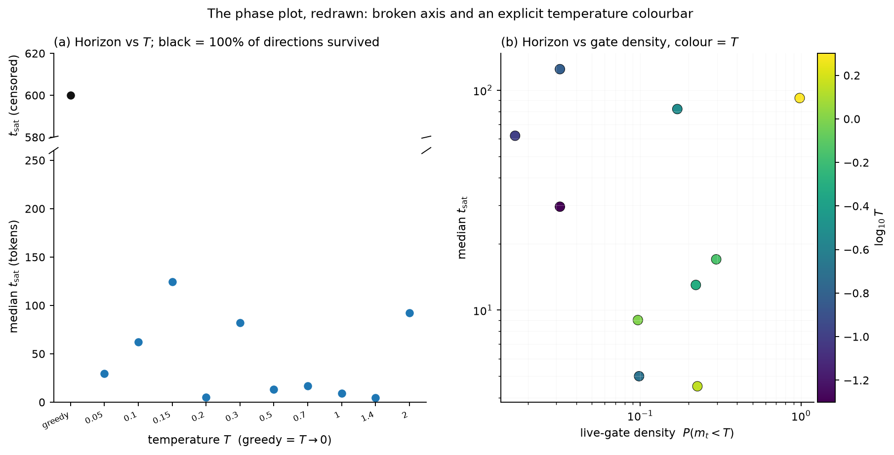
Fig. F3 — the phase plot, redrawn. (a) Median horizon $t_{\rm sat}$ vs $T$ with a broken axis; the greedy $T\to0$ point is at 600 (all directions survive); (b) horizon vs live-gate density $P(m_tsl2_phase.png.
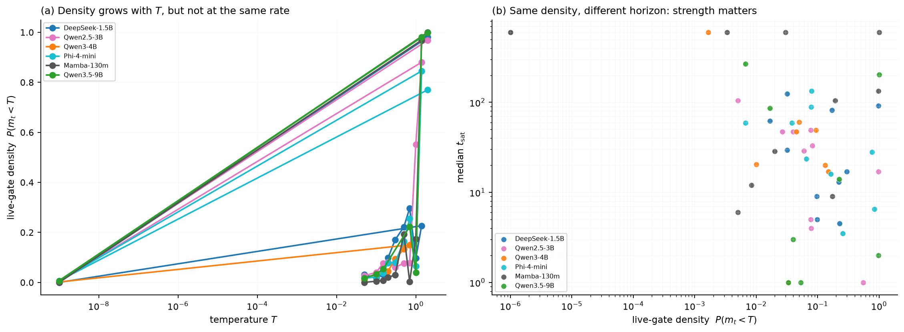
Fig. F3b — live-gate density across models. (a) Density $P(m_tresults/softloop*, 300–600 steps, 8–32 directions. Read: density rises with $T$ at different rates; at the same density the horizon differs by 10×, so density alone is not the order parameter. This is the further analysis you asked for on sl2_live_density_models.
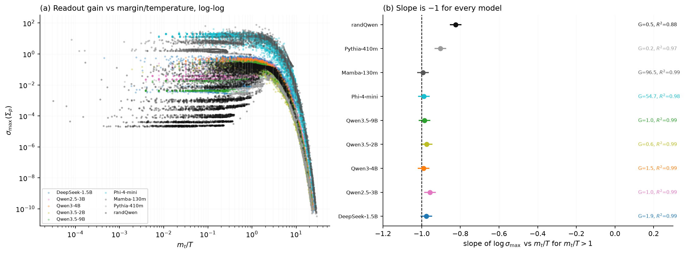
Fig. F4 — gate law, log–log and slopes. (a) $\sigma_{\max}(\Sigma_p)$ against $m_t/T$ for all models, log–log; (b) fitted slope for $m_t/T>1$, with $G_{\rm eff}$ and $R^2$. Data: 4–11 temperatures per model, 8–32 directions. Read: slopes $-0.90$ to $-0.99$ for every trained model; the random control is $-0.83$. Trivial/not: the slope is the softmax identity; the measured content is the collapse and $G_{\rm eff}$.
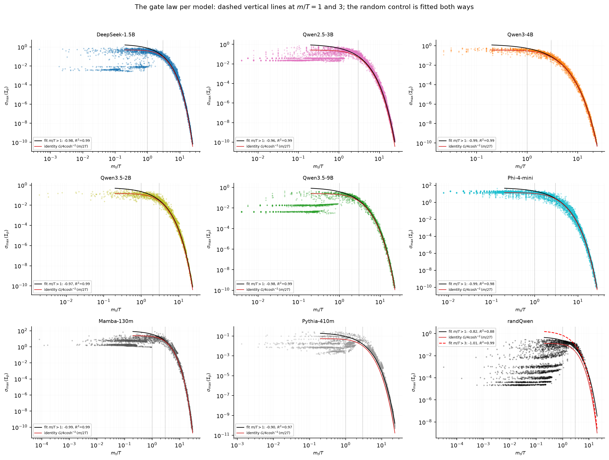
Fig. F5 — per-model fit, including the random control. Data (dots), tail fit (black), identity curve $G/4\cosh^{-2}(m/2T)$ (red), and for randQwen the fit restricted to $m/T>3$ (red dashed). Read: the random control's tail fit is $-1.01$ with $R^2=0.99$; the earlier “the control breaks the law” came from fitting through the flat $m/T<1$ region. This is the fixed fit you asked for. The identity curve, not a straight line, is what matches the full range.
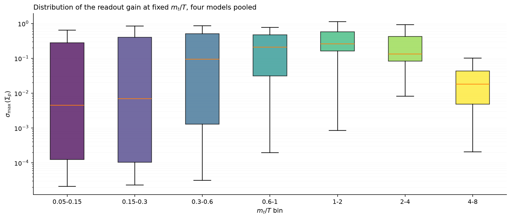
Fig. F6 — distribution of the readout gain. Boxes of $\sigma_{\max}$ in bins of $m_t/T$, four models pooled. Read: the distribution narrows as $m/T$ grows; the median follows the identity. Use: this is the “show me the distribution, not only the max” figure.

Fig. F7 — pair geometry $G_t$. (a) Violin of $G_t=\|E_i-E_j\|\|W_i-W_j\|$ per model; (b) $G_t$ vs margin. Data: results/softloop_gates/*/gates.npz, 300 steps per orbit. Read: $G_t$ is a per-model constant to ±40%; Phi/Mamba are 25–100× larger; the random control is degenerate. Not trivial: the per-model constant is what makes Phi's gates strong.
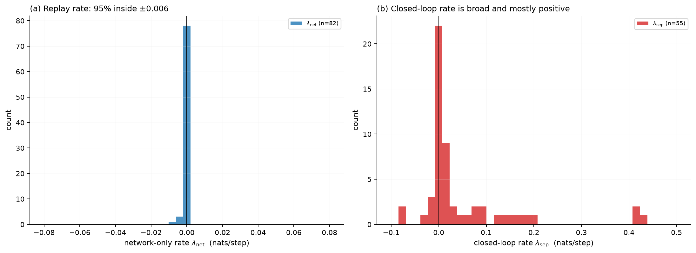
Fig. F8 — network rate vs loop rate. (a) Histogram of $\lambda_{\rm net}$ over all model/temperature pairs; (b) histogram of $\lambda_{\rm sep}$. Read: $\lambda_{\rm net}$ is within ±0.006 (95%), centred on 0; $\lambda_{\rm sep}$ is broad and mostly positive. This replaces the inconclusive scatter (b) of the old Fig. 8.
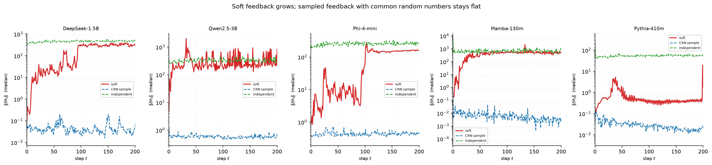
Fig. F9 — soft vs sampled feedback. Response for soft feedback (red), common-random-number sampling (blue dashed) and independent sampling (green dashed) at $T=1$, six models. Data: results/softloop_sample/*/{crn,ind}_T1.0. Read: soft grows; CRN is flat at 1; independent separates at step 0. Conclusion: the instability is deterministic mean feedback, not sampled generation.
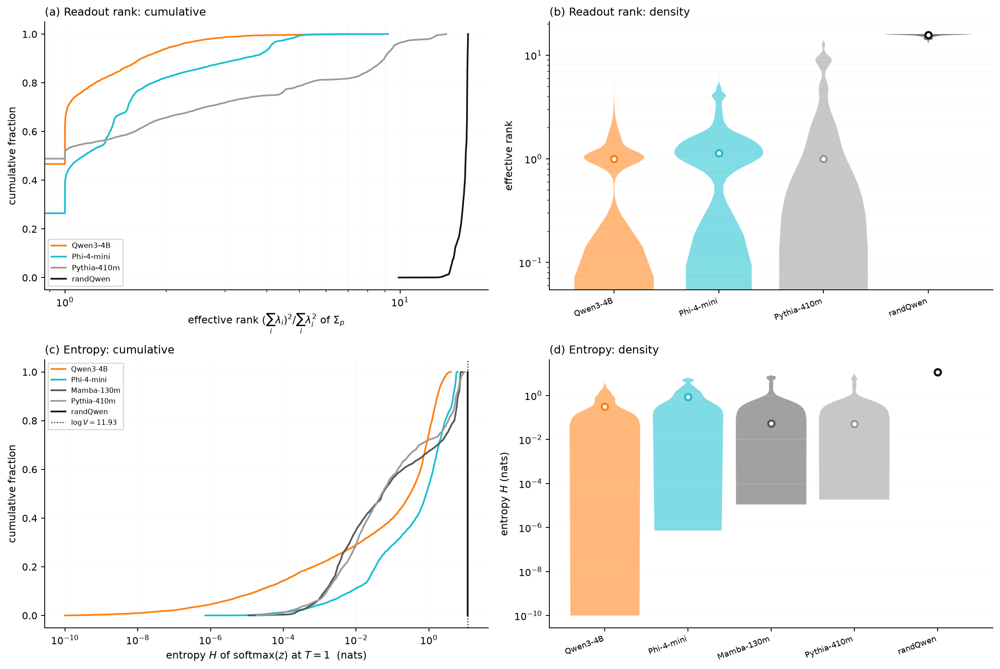
Fig. F10 — readout rank and entropy. (a) ECDF and (b) violin of the effective rank of $\Sigma_p$ (top-16); (c) ECDF and (d) violin of the entropy $H$ of $\mathrm{softmax}(z)$ at $T=1$. Data: sv_read/ent_ref in results/softloop*, 300–600 steps. Read: trained models rank 1.0–1.1, random control 15.7; entropy 0.3–1.0 nat for trained models, 11.6 for the random control ($\log V$). Caveat: ent_ref is at $T=1$; “entropy vs $T$” is not a temperature effect.

Fig. F11 — the D2 / TwoNN pipeline on the soft-loop state clouds. This is the existing real figure (it loads results/figures/softloop/d2pipe_softloop.json), included because you liked it. Read: the $T\to0$ and $T=1$ orbits are drifting repetition loops and are correctly flagged; the $T=0.5$ and $T=2$ orbits are aperiodic and have no scaling region. It is the same verdict as the greedy corpus: D2 is descriptive, not evidence.
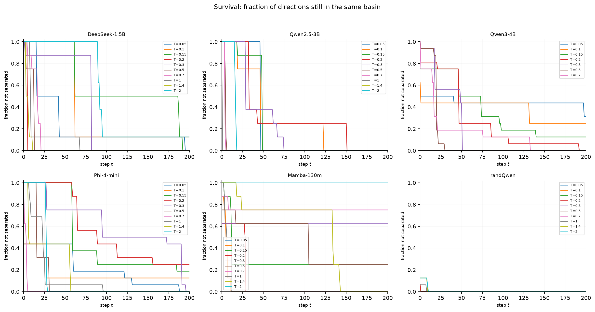
Fig. F12 — survival curves. Fraction of directions still in the same basin, $P(t_{\rm sat}>t)$, for six models and several temperatures. Data: results/softloop*, $t_{\rm sat}$ = first step with $\|\delta h_t\|>0.25\,\mathrm{median}\|h\|$, 300–600 steps. Read: DeepSeek survives longest at low $T$; Qwen/Phi separate early; randQwen is at 0 immediately; Mamba has a long-lived fraction. Use: this is the per-model version of the old sl2_survival_dense10.
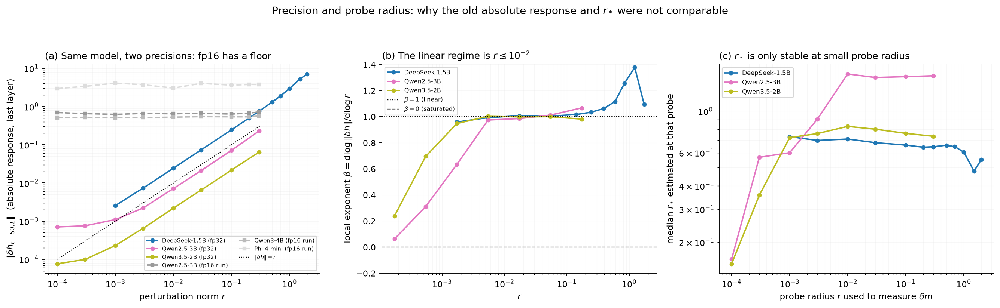
Fig. G1 — precision and probe radius. (a) $\|\delta h_{50,L}\|$ vs $r$ for fp32 and fp16 runs of the same/nearby models; (b) local exponent $\beta={\rm d}\log\|\delta h\|/{\rm d}\log r$; (c) $r_*$ estimated at different probe radii. Read: fp16 has a constant floor (0.5–4) independent of $r$; fp32 scales with $\beta\to1$ for $r\lesssim10^{-2}$; $r_*$ is only stable at small probe radius. This is the figure that invalidates the old absolute comparisons. Data: new fp32 runs results/update/fp32_*, old fp16 runs a1r_*, DeepSeek 12-radius w100_layers.
Fig. G2 — same as C4, repeated here for the linearity section. Sparse vs dense directions. Read: dense is linear; sparse saturates. Consequence: use dense directions for $r_*$ and absolute response.
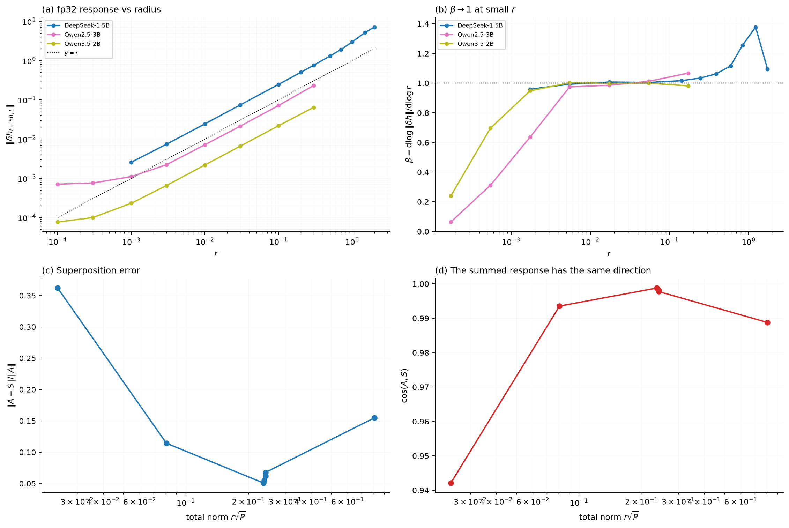
Fig. G3 — old response-vs-radius figure, corrected. (a) Absolute response vs $r$ for the fp32 models; (b) local exponent; (c) superposition error vs total norm; (d) replication across prompts. Data: DeepSeek 12 radii, Qwen2.5/Qwen3.5 8 radii, superposition 3 prompts. Read: DeepSeek is linear from $10^{-3}$ to 0.3; Qwen2.5/3.5 from $10^{-4}$ to $10^{-2}$, then sublinear. Superposition error is 5–7% at total norm 0.24.
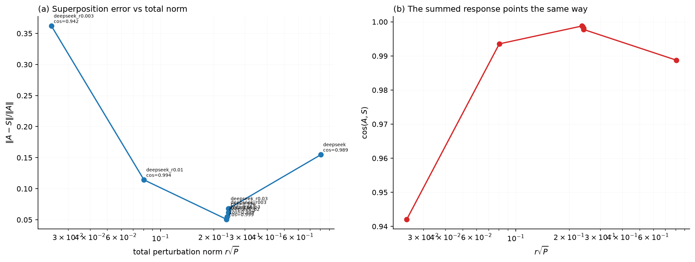
Fig. G4 — superposition, all prompts. (a) $\|A-S\|/\|A\|$ vs total norm; (b) $\cos(A,S)$. Data: results/superposition/*, 65 positions, 2 trials, last layer. Read: error is 5–7% at the minimum (total norm 0.24), 36% at the fp32 subtraction floor; $\cos>0.997$. Trivial/not: the minimum is the measured linear-regime error; the rise at large norm is real saturation.

Fig. H1 — free-run flip fraction. Fraction of directions that flip at least one token, against $r$; band = Wilson 95%. Data: small models 3 prompts × 20 directions (results/local_data/models/*/chaos), DeepSeek 512 directions (results/hazard), 14B models 1000 directions (results_big/*/free_*). Read: Qwen3-4B/Qwen2.5/Phi-mini are 35–60% flat; DeepSeek rises from 3% to 60%; Phi-4 is near 0; 14B models rise. Caveat: the small-model runs use 20 directions and sparse perturbations, so the bands are wide; the ordering, not the exact value, is the result.

Fig. I1 — transport kernel. (a) $\log_{10}K(p,t)$ for the median over prompts; (b) rows $K(p,\cdot)$ at several prompt positions. Definition: $K(p,t)=\|\delta h_{t,L}\|/r$ when only prompt position $p$ is perturbed. Data: results/transport/deepseek_p*, 3–5 prompts, 8 directions, $r=0.1$, 300 tokens, last layer. Read: a persistent background from the first positions plus a travelling front at $t\approx p+20$–$40$. Model coverage: only DeepSeek has saved kernels; the 14B transport runs would need new data.
Fig. I2 — superposition (same as G4). The kernel is a valid decomposition at total norm 0.24 to 5–7%.
controls.md)These are the existing control figures; the scripts load the control .npz files (no synthetic arrays). They are the reason several old “LLM signatures” are not evidence.
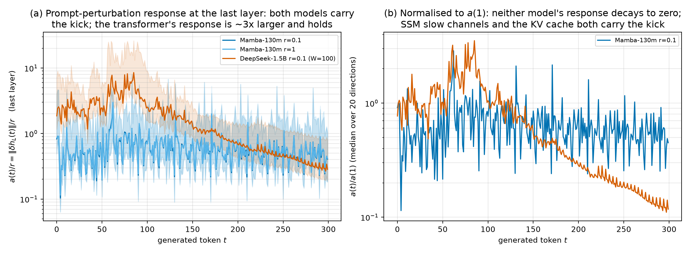
Fig. J1 — Mamba carries the kick. Response $a(t)/r$ for Mamba-130m and DeepSeek-1.5B; median and 10–90% band. Read: Mamba does not decay to zero; it carries 0.2–0.9 for 300 tokens. The “attention carries the perturbation” statement is too strong; attention carries a ~3× larger response.

Fig. J2 — Mamba's rate fluctuates around zero. $\lambda_{10}(t)$ for the control and DeepSeek; transient positive excursions up to +0.11 in the control. Read: transient growth alone does not separate chaos from a contracting system.
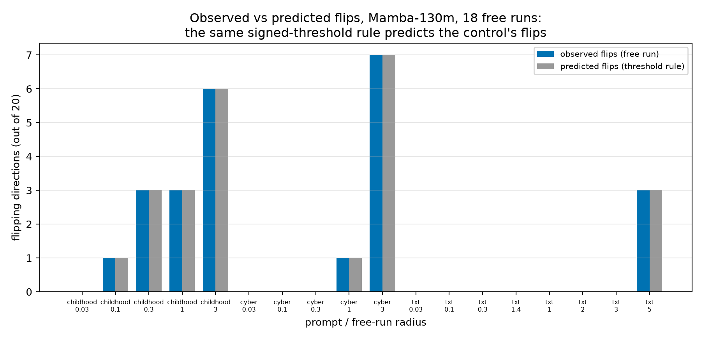
Fig. J3 — the threshold rule is exact on the control. Observed vs predicted first flips, 18 free runs, 25/25 exact. Read: the flip phenomenology is a property of argmax, not of chaos.

Fig. J4 — no re-synchronisation. Token agreement after the first flip; 0/24 flipped runs re-synchronise. Read: “flux tube” phenomenology is reproduced by a system with all-negative Lyapunov exponents.
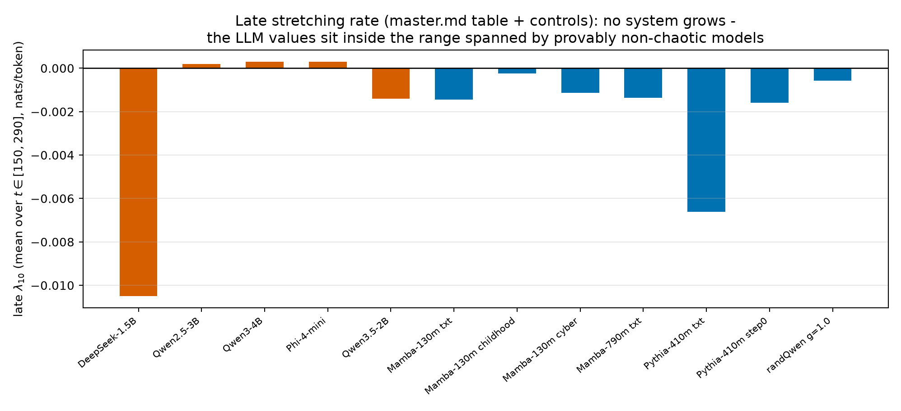
Fig. J5 — late rate across all models and controls. The LLM values sit inside the band of provably non-chaotic models.
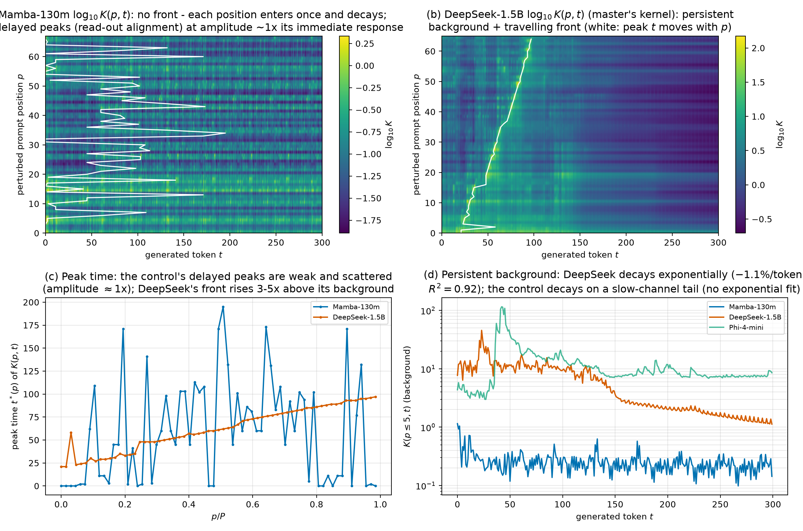
Fig. J6 — Mamba has no travelling front. Kernel $K(p,t)$ for the control; front amplitude 1.0–1.2 vs 13–53 for DeepSeek. Read: long-lived influence is not attention-specific; re-amplification is.
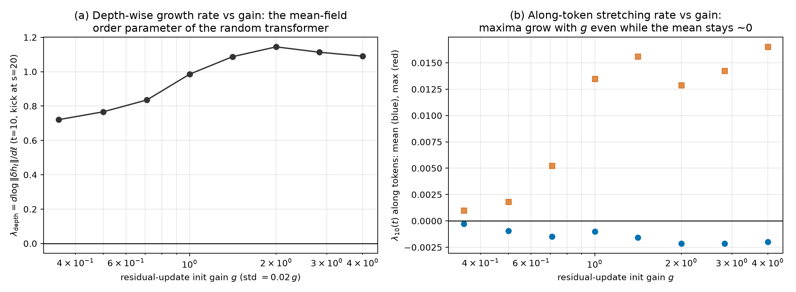
Fig. J7 — random transformer gain sweep. Depth exponent vs weight gain and token-axis rate. Read: the depth axis can be made strongly amplifying while the token axis stays neutral; weight scale alone does not produce token-axis chaos.

Fig. J8 — thresholds across models. $r^*$ for random init, DeepSeek, Pythia, Mamba. Read: $r^*$ tracks the margin landscape, not the architecture.

Fig. J9 — correlation dimension across all models. Read: no model has a scaling region; the fitted $D_2$ spans 0.9–71 as a smooth function of the state-cloud dimension, with the contracting control at the low end. Use: this is the quantitative veto of the old D2 claims.
| result | status | why |
|---|---|---|
| No sustained growth (TF/replay) | keep | 9 architectures, finite-time exponent $\le0$ |
| Closed loop grows, replay flat | keep, feature | 10^2–10^4 vs 1; F1–F2 |
| Window $t_{\rm first}=W-P$, $t^*_\ell=\ell(W-1)-21$ | keep, feature | 106 windows, $R^2=1.0000$; E1 |
| Depth: block-0 spike + 10% late rise | keep, feature | $R^2=0.996$–$0.9999$; B2 |
| Larger models closer to marginal | keep, qualify | 7 models, block-0 share varies |
| Gate law slope $-1$ | keep as identity | F4–F5; $G_{\rm eff}$ is the measurement |
| Random control breaks gate law | drop | false; $-1.01$ for $m/T>3$ |
| Perpendicular response | drop as discovery | median 90°; quote radial fraction |
| Rotation 78–87° | keep, qualify | real, modest; C3 |
| $r_*$ ordering | keep only with dense directions | C5; sparse values are probe-dependent |
| $r_*$ log-logistic law | drop | staircase, $R^2$ 0.77–0.96 |
| Five-regime taxonomy | drop | four of five claims fail |
| Entropy rises with $T$ | drop | ent_ref is at $T=1$ |
| Readout rank 1 | keep, qualify | F10; consequence of two-token concentration |
| Hunt–Ott entropy zero | drop | absolute exponents are positive; relative is small |
| Edge of chaos | do not claim | no positive Lyapunov exponent measured |
| Common linear regime all models | drop | C4/G1–G3; fp16 floor and sparse directions |
ent_ref is at $T=1$. F10.| # | experiment | status |
|---|---|---|
| 1 | fp32 A1 for Qwen2.5-3B, Qwen3.5-2B | done, results/update/fp32_* |
| 2 | fp32 A1 for Qwen3-4B, Phi-4-mini | blocked: 4B fp32 does not fit on the T4; the Spark is currently using >55 GB for colleagues' jobs |
| 3 | angle probe, 64 directions, 5 small models | done, results/update/angle_* |
| 4 | dense-direction $r_*$, 128 dirs, 3 fp32 small models | done, results/update/dense_* |
| 5 | dense 14B runs | blocked by Spark memory |
| 6 | DeepSeek dense window sweep, 106 windows | done (from existing wspec) |
| 7 | nonnorm controls | not run; the control .npz on x11 can be used if you want the rotation null |
| 8 | depth probe 64 tokens × 32 dirs | not run; ~2 h on the Spark |
| 9 | exact $\Sigma_p$ validation (all vocab) | not run; ~1 h |
| 10 | attention-weight fraction | done, DeepSeek W=100/4096, results/update/attn_* |
| 11 | depth probe with k=32 directions | done, results/update/depth_k32 (Fig. B1b) |
Recommendation: the highest-value remaining run is fp32 for Qwen3-4B and Phi-4-mini, because those two models currently cannot enter any absolute comparison. The second is dense 14B $r_*$, because the 14B models are the most robust in the sparse data and we cannot yet compare them on the same direction ensemble. Both need either a free 60 GB GPU or a model copy to the Spark.